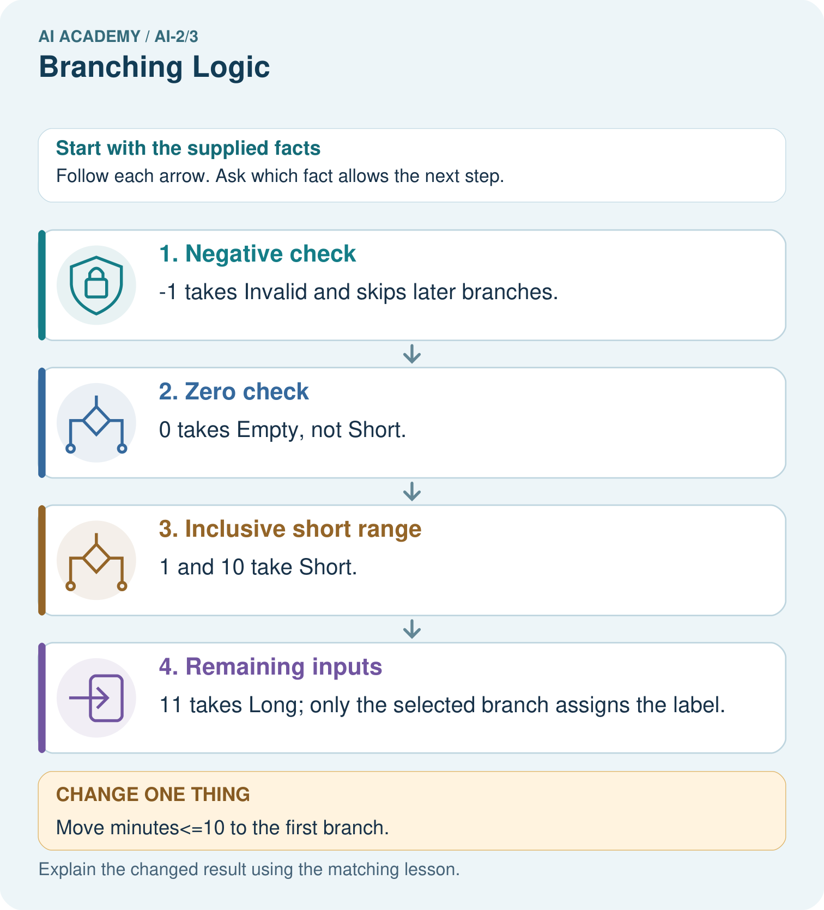

AI Academy · Level 2 · Grade 7 · Week 3 · Teacher guide
Branching Logic
Learn to understand, design, build, test and explain AI systems responsibly.
Project: Transparent Book Recommender
Teacher guide · 1 of 8
Branching Logic
Teach the learning cycle
Primary target: Trace the selected branch in an if elif else chain
| Session | Sequence and minutes | Resources |
|---|---|---|
| Session 1 · Understand · 45 min | 0–7: recall and prerequisite; 7–15: inspect the concrete case and predict; 15–30: teacher models the worked trace; 30–40: learners explain a step using the text and visual; 40–45: check the core idea. | Sections 1–6; record the brief recall in the workbook. |
| Session 2 · Practise · 45 min | 0–5: retrieve the procedure; 5–15: W2 completion practice; 15–23: explain and check with a partner; 23–30: each learner answers the misconception check; 30–40: targeted reteaching or a harder variation; 40–45: prepare the investigation. | Sections 7–10; use the matching workbook W2 and misconception check. |
| Session 3 · Investigate and transfer · 45 min | 0–5: retrieve the decision rule; 5–20: investigate or trace; 20–30: start the independent case; 30–38: connect the project; 38–43: act on feedback; 43–45: plan the return check. | Sections 9 and 11–14. Give extra time to finish the full task set; use Section 15 when the week includes a coding lab. |
This is a starting allocation of 135 minutes, not a validated duration. Preserve all named topics. Schedule extra time for connected examples, the full investigation, independent cases and project building. Repeated copies of a case share one recorded attempt; they are not new evidence.
Case exposure check: this source example appears in ai-2/3, python-bridge/5. Reuse a familiar case for recall or modelling; verify that the case used to assess transfer has not already received feedback.
Retrieval answer guidance
Decompose a Goal
Without opening the old lesson, explain one key idea from Decompose a Goal. Give an example and a mistake that the idea helps you avoid.
Look for: Distinguish a function definition from a function call
Reference example, not the only acceptable wording: Name show_remaining; parameters capacity and used. Arguments 15 and 6 match capacity = 15 and used = 6. Expected printed result 9.
Use the student module and workbook section with this exact week title. The worked case, independent question and answers below form one aligned lesson sequence.
What the learner must demonstrate
Classify lengths with if pages<80 then Short; else if pages<=160 then Medium; else Long. Trace 79,80,160,161. What happens if the <=160 branch is placed first?
Concept to explain
Ordered conditions determine which path a system takes.
| Term | Meaning |
|---|---|
| condition | A statement evaluated as true or false to help select an action. |
| branch | One path taken when a condition selects among alternatives. |
| if/else | A programming structure that chooses a path according to whether a condition is true or false. |
| order | The sequence in which steps are performed or items are read. |
Prepare the class
Use the supplied scenario, student illustrations and blank paper. For numeric work, offer counters or a calculator after learners show the setup. Fictional records are supplied; personal data and paid accounts are unnecessary.
Allow 80 minutes: recall 8; explanation 12; worked demonstration 15; guided practice 20; independent assessment 15; project and reflection 10. Extend the lab into a second session when needed.
Preparation for the connected explanation
Teach ordered selection and indentation using a written input contract. A script can cover all branches while missing an equality bug. Reference: https://docs.python.org/3/tutorial/controlflow.html#if-statements. The new task requires one four-way chain; independently correct equivalent conditions are acceptable.
Readiness answer
<= accepts equality; < excludes it. At 12 the two conditions produce different Boolean values.
Python 3 editor and branches.py
The written duration rule and boundary case cards
Blank trace table with a skipped marker
End goal for the pictorial case
By the end, I can order branches so each input receives exactly its intended category.
This added worked case illustrates the week’s main idea. Retain all original and connected topics; schedule its practice within the teaching cycle.
Teacher guide · 2 of 8
Explain the mechanism
Explain the mechanism
Input → Process → Output
Trace the information. At each stage, ask what changed and how you could test it.
Which stage could fail even when the other two are correct? Explain:
Predict first. Then check each step. A correct answer without visible reasoning is incomplete evidence.
1. IF pet is hungry → feed.
2. ELSE IF pet needs exercise → walk or play.
3. ELSE → provide a quiet rest space.
4. Boundary test: what if hungry and needs exercise? The first true branch wins.
Recalculate, retrace, or restate the reasoning in your own representation:
CHECK Did the evidence answer the exact question? Did the total, path, or source record stay consistent?
Concrete teaching case
If pages<100 choose Short; otherwise if pages<=200 choose Medium; otherwise Long.
Classify 99,100,200,201 pages.
Exact explanation to model
Short, Medium, Medium, Long. Strict and inclusive boundaries and branch order matter.
Explain the added worked example
A fictional activity sorter labels a supplied integer duration. Negative values are Invalid; values from zero through 12 are Short; larger values are Long. The labels describe duration only. Write this requirement before the program so that a test has an expected answer independent of the code.
An if statement selects a block when its condition is true. An elif is considered only if earlier conditions in the same chain were false. An else handles the remaining cases. Colons end the condition lines. Use four spaces for the indented statements and keep related branches aligned.
The output is Short. For 12, the first condition is false and the second is true. The else block is skipped. print(label) is not indented, so it runs after the selected branch. Each path assigns label before this line reads it. Change only minutes and save before each fresh run.
Key terms
| Term | Meaning |
|---|---|
| Branch | A possible path through a program |
| Condition | An expression used to decide which path to take |
| Indentation | Leading spaces that identify a Python code block |
| Boundary | A value where a classification may change |
| Regression check | A previous test rerun after an edit to detect a new failure |
Model the reasoning aloud
Use the complete worked example below before asking learners to complete W2. Reveal a small part, invite a prediction, then explain the deciding step. These teacher notes contain solutions; do not reveal the independent case answer during modelling.
| -1 | Invalid | Negative input rejection |
|---|---|---|
| 0 | Short | Lowest valid duration |
| 11 | Short | Just below the upper boundary |
| 12 | Short | Exact upper boundary |
| 13 | Long | Just above the boundary |
These tests exercise every branch and the equality case. A change from <= 12 to < 12 is exposed by 12; testing 11 alone misses it. Branch coverage means every branch was exercised, but it does not prove every condition is correct.
| Thinking move | Teacher prompt |
|---|---|
| Plan | What is given? What is the question? Which procedure fits these facts? |
| Do | Point to each input and intermediate step in the worked trace. Name the rule that allows the next step. |
| Check | Does the output answer the question? Which assumption or limitation prevents a larger claim? |
Use the diagram and verbal explanation together. Ask learners to match a sentence to a specific visual step; do not assign learners fixed visual or auditory learning styles.
A pictorial worked case: Branching Logic
A fictional reading-time labeler uses one Python if/elif/else chain.
The facts we will use
Whole minutes below 0: Invalid; 0: Empty; 1–10: Short; above 10: Long.
Order checks as minutes<0, minutes==0, minutes<=10, otherwise. Print the assigned label once.

Read the picture one step at a time
Why this result follows
The third comparison alone would include negative values and zero, but earlier branches already handle them. An elif chain selects its first true branch. Multiple independent if statements would have different behavior and could overwrite an earlier label. Boundary traces show why order belongs to the specification.
What this example does not establish
The example assumes whole numeric minutes; strings, missing values and fractional values need a separate declared input contract.
Change one thing in the pictured case
Change: Move minutes<=10 to the first branch.
Prediction: −1 and 0 wrongly receive Short.
Reason: Both satisfy the earlier comparison before their intended checks are reached.
Ask while showing the picture
Cover the result. Ask learners to name the inputs and predict the next step. Uncover one step, connect the icon to the actual procedure, and explain its evidence. Then change the supplied condition and compare. The picture is a representation; it does not document execution of a real AI model.
Teacher guide · 3 of 8
Demonstrate and guide practice
Demonstrate and guide practice
Board sequence
Write the given facts: If pages<100 choose Short; otherwise if pages<=200 choose Medium; otherwise Long.
Write the question to explain: Classify 99,100,200,201 pages.
Reveal after predictions: Short, Medium, Medium, Long. Strict and inclusive boundaries and branch order matter.
Keep for an independent attempt: If pages are at most 80, choose short; otherwise choose long. Classify books with 79, 80 and 81 pages and explain the boundary.
Classroom dialogue
Ask: Which facts are given, and which would we have to assume? Learners mark relevant details before discussing answers.
Say: Predict first. Show the rule, information path or calculation that would produce the result. A correct guess is not yet an explanation.
Reveal reasoning one step at a time. Explain why a tempting alternative fails. Write units and denominators for arithmetic, trace conditions for decisions, and identify supporting sources for claims.
In pairs, one learner solves while the other checks evidence; exchange roles. Remove the worked answer before independent assessment.
Model these guided questions
The faulty < 12 version prints Long for 12, contrary to the inclusive Short rule. Repair to <= 12 and rerun 11 or 13 as well as 12. Exit: exact 12 is missing. -1, 2 and 20 can visit all branches even when the equality comparison is wrong.
Case-specific teaching sequence
| Stage | Teacher action |
|---|---|
| Session 1 start to 7 minutes | Retrieve inclusive comparison and collect the prerequisite. |
| 7 to 20 minutes | Translate the duration rule and complete W1. |
| 20 to 33 minutes | Trace the diagram and code, marking skipped branches. |
| 33 to 45 minutes | Complete W2 with predicted and actual outputs. |
| Session 2 start to 8 minutes | Retrieve why equality needs a separate test. |
| 8 to 20 minutes | Run the faulty two-if script and complete W3 and the guided question. |
| 20 to 35 minutes | Collect the new sorter in W4 before hints. |
| 35 to 45 minutes | Use W5 and the exit to distinguish coverage from correctness. |
Reduce help deliberately
Completion task: For -1, 12 and 13, record checked conditions, skipped conditions and the final label. Run each as a fresh script after predicting.
Teacher check: -1: first True, second skipped, Invalid. 12: first False, second True, Short. 13: both False, else selected, Long. Retain observed results separately.
Start by identifying the given inputs together. Leave the intermediate steps blank. If needed, model one step, then withdraw that help on the next step. Move to a full trace only when the partial trace is understood. For partners, alternate explainer and checker; collect a response from every learner before discussion.
Individual reasoning check
Use the worked case for Branching and boundary tests. Proposed explanation: “Every condition in the chain always runs”. Decide whether this explanation is supported. Point to the step or supplied fact that decides; explain your repair if needed.
Expected correction: Once one condition succeeds, later alternatives are skipped.
Collect explanations, not only yes/no votes. If a misunderstanding is common, re-model the relevant step for the class. If it affects a few learners, give a short targeted group explanation while others solve a more demanding variation.
Pictorial practice question
Give expected labels for −1,0,10,11 and identify the equality boundary for Short.
Reasoned teacher answer
Invalid, Empty, Short, Long. Ten is included in Short because the comparison uses <=.
Changed-case reasoning: −1 and 0 wrongly receive Short. Both satisfy the earlier comparison before their intended checks are reached.
Collect each learner’s explanation before discussion. Use the first missing connection between input, deciding step and result to choose support. This question is worked-case practice, not fresh mastery evidence.
Teacher guide · 4 of 8
Run the weekly evidence lab
Run the weekly evidence lab
Words You Can Use to Reason
A definition matters when you can recognize the idea, use it, and contrast it with a near-miss.
Predict → Test → Record → Explain
Keep expected and actual results separate. Surprises are useful data when recorded honestly.
Trace six pet cards through the same ordered rules. Change only the rule order and compare outputs.
What did the hardest test teach you that the normal test did not?
Make the lab runnable
Use the concrete case as the shared normal case and the independent question as a second case. Each pair creates a boundary or missing-information case and predicts its result before testing. Keep the expected result separate from an observed mistake.
| Record | What to capture |
|---|---|
| Input or evidence | Exact data, instruction or claim |
| Expected result | Answer or safe fallback declared before the run |
| Observed result | Actual result, including errors |
| Explanation | Rule, calculation or evidence explaining the outcome |
| Next test | One justified change and a new prediction |
Diagnose and reteach
For guessing, return to given facts and request a trace. For vocabulary without application, use one example and one non-example. For arithmetic errors, check the setup before the calculation. Finish with a different uncoached case before recording mastery.
Address these additional misconceptions
Every condition in the chain always runs: Once one condition succeeds, later alternatives are skipped.
Two if statements behave like if then elif: Independent if statements can both run and overwrite a result.
Indentation is cosmetic: Leading spaces define the branch body.
Every branch tested means every input correct: A missing equality case can hide a wrong comparison.
Match the support to the first error
| What the response shows | Next teaching action |
|---|---|
| Missing or misread facts | Read the case aloud, mark supplied versus unknown facts, and let the learner restate it. |
| Wrong procedure | Return to the deciding step in the worked case. Contrast it with the proposed incorrect explanation. |
| Arithmetic or implementation error | Trace intermediate values or lines; preserve the first mismatch and retry that step. |
| Correct result without a reason | Ask for a trace and a changed case before marking independent understanding. |
| An unsupported wider claim | Ask which supplied evidence supports the claim and which further observation would be needed. |
Offer an oral explanation, drawing, enlarged visual or fewer examples when that removes a reading/writing barrier. Keep the same reasoning goal. Stretch secure learners by changing a boundary or assumption and asking them to defend the effect, not simply by assigning more of the same questions.
Teacher guide · 5 of 8
Assess and explain the answers
Assess and explain the answers
Worked case answer
Short, Medium, Medium, Long. Strict and inclusive boundaries and branch order matter.
Independent question
If pages are at most 80, choose short; otherwise choose long. Classify books with 79, 80 and 81 pages and explain the boundary.
Expected independent answer
79 and 80 are short; 81 is long. At most 80 includes 80.
What counts as evidence
| Criterion | 0 points | 1 point | 2 points |
|---|---|---|---|
| Result | Incorrect or absent | Partly correct | Correct with necessary conditions |
| Reasoning | No supporting trace | Some steps | Clear mechanism, calculation or source support |
| Limit | Overclaims certainty | Vague limitation | Relevant uncertainty or missing fact |
| Transfer | Copies without adapting | Adapts with prompts | Solves a changed case independently |
Use 6/8 as a classroom checkpoint, with 2 required for both Result and Reasoning. This is a proposed teaching rule, not a validated certification threshold. Do not count a coached answer as independent mastery; correct unsafe or unsupported claims regardless of total.
Feedback
Ask the learner to find the evidence that challenges this claim: “At most 80 excludes 80.” Keep the first attempt and an uncoached retry separate.
Original transfer answer
Original results are Short, Medium, Medium, Long. With <=160 first, 79 is incorrectly routed to Medium and the Short branch becomes unreachable for nonnegative short books. Check values just below, at and above each boundary.
Explanations for the additional workbook examples
W1 Explain the chain
Describe the purpose of if, elif and else in the worked duration sorter. Explain why print(label) is outside the indented branches.
if tests negative first; elif checks <= 12 only after that fails; else handles the rest. Unindented print runs after any selected branch, whose assignment gives label a value.
W2 Trace the tested path
For -1, 12 and 13, record checked conditions, skipped conditions and the final label. Run each as a fresh script after predicting.
-1: first True, second skipped, Invalid. 12: first False, second True, Short. 13: both False, else selected, Long. Retain observed results separately.
W3 Repair the overwritten result
Trace the two-independent-if example for -1. Identify which assignment overwrites the earlier label and make the smallest repair.
The first assignment sets Invalid; the second if also succeeds and changes label to Short. Replace the second if with elif. The repaired output is Invalid.
W4 Build a new sorter independently
Use an integer tiles count. Label a negative value Invalid, zero Empty, 1 through 6 Small and values above 6 Large. Write an ordered if elif else script and predict -1, 0, 1, 6 and 7. Include one print after the chain.
Use if tiles < 0, elif tiles == 0, elif tiles <= 6, else, assigning the respective labels and printing after the chain. Outputs Invalid, Empty, Small, Small, Large. Zero must be handled before the <= 6 branch.
W5 Choose revealing regression tests
A repair changes the small-count condition from < 6 to <= 6. Name the case that exposes the original error and two different kinds of earlier cases to rerun.
6 exposes the original wrong Large label. Rerun zero for Empty and a negative count for Invalid, or 7 for Large. Passing only 6 does not check earlier branches.
Assess independent transfer
Selected case: Use an integer tiles count. Label a negative value Invalid, zero Empty, 1 through 6 Small and values above 6 Large. Write an ordered if elif else script and predict -1, 0, 1, 6 and 7. Include one print after the chain.
Selected case answer
Use if tiles < 0, elif tiles == 0, elif tiles <= 6, else, assigning the respective labels and printing after the chain. Outputs Invalid, Empty, Small, Small, Large. Zero must be handled before the <= 6 branch.
| Dimension | Evidence required |
|---|---|
| Explanation | Names the applicable idea or procedure and ties it to the supplied facts. |
| Trace and result | Preserves the given inputs and shows the relevant intermediate steps; distinguishes a prediction from an observed execution. |
| Limits | States the assumptions, missing evidence or conditions under which the result would change. |
Record each dimension as not yet, with support, or independent. Accept a valid alternative procedure with a defensible trace. Do not penalise an honestly recorded model failure if the learner correctly explains its evidence and limits.
Feedback that the learner uses
Name the earliest unsupported step and give one action to repair it. Have the learner make that repair now and explain why. Then assess the relevant skill on a fresh, fully specified case. Confirm it was not previously practised with feedback; solve and check the new case before assigning it. A follow-up design prompt is a starting brief, not automatically an equivalent test.
Teacher guide · 6 of 8
Connect and extend learning
Connect and extend learning
Transparent Book Recommender
Branch when a reader has a hard constraint such as language, format, or maximum length.
Keep the decision, input, result, explanation and remaining limitation in the project evidence record. Retrieve this record next week rather than restarting the project.
Support and stretch
Trace one record or condition at a time with counters and labelled columns. Stretch: introduce a tie, boundary or missing field and declare its handling policy before rerunning.
Exit reflection
Ask for one decision the learner can now justify and one situation requiring more evidence or human review. Confidence ratings are separate from correct independent performance.
Bridge to the next week
Next: Week 4: Trace Tables. Retrieve today’s evidence and identify what carries forward and what is new.
Support and fresh reassessment
Provide movable branch cards and align the four-space blocks on a ruled page. Permit an oral trace alongside the script and record help. Extension: swap the zero and <= 6 checks and find the smallest nonnegative counterexample.
W4 must assign one correct label on all five cases and explain zero before the small branch. After support, retry a shelf-count sorter with Empty at zero, Few for 1 through 4, Many above 4 and Invalid below zero. Expected outputs at -1, 0, 4, 5 are Invalid, Empty, Few, Many.
Week 6 repeats a block with loops and records each change in state.
Plan the delayed return
Suggested return points in this level: ai-2/4, ai-2/6, ai-2/9. Use actual classroom dates, adjusting for holidays and gaps. One, three and six teaching weeks are scheduling choices, not a claimed optimal spacing.
At a delayed check, ask for the idea from memory and a changed application. Compare with the earlier independent response and record support used. For a new level, revisit the previous capstone before checking the new prerequisites.
| Record | Teacher evidence |
|---|---|
| Learner code and date | |
| Concept and case used; prior exposure | |
| Explanation / trace / limits | |
| Support and first repair | |
| Changed case and delayed outcome | |
| Next teaching action |
Use the evidence to choose reteaching or the next step. A completed page, confidence rating or attractive project does not by itself demonstrate understanding.
Project evidence from this case
Validate recommender requests before ranking items, retaining explicit labels for missing or invalid cases.
Teacher guide · 7 of 8
Prepare, teach and assess
Teaching target: Trace the selected branch in an if elif else chain
Prepare the labelled worked-case picture, the matching workbook, fictional input cards and a place for individual responses. No paid AI account is required for the paper reasoning activities.
| Session | Plan | Resources |
|---|---|---|
| Session 1 · Understand · 45 min | 0–7: recall and prerequisite; 7–15: inspect the concrete case and predict; 15–30: teacher models the worked trace; 30–40: learners explain a step using the text and visual; 40–45: check the core idea. | Sections 1–6; record the brief recall in the workbook. |
| Session 2 · Practise · 45 min | 0–5: retrieve the procedure; 5–15: W2 completion practice; 15–23: explain and check with a partner; 23–30: each learner answers the misconception check; 30–40: targeted reteaching or a harder variation; 40–45: prepare the investigation. | Sections 7–10; use the matching workbook W2 and misconception check. |
| Session 3 · Investigate and transfer · 45 min | 0–5: retrieve the decision rule; 5–20: investigate or trace; 20–30: start the independent case; 30–38: connect the project; 38–43: act on feedback; 43–45: plan the return check. | Sections 9 and 11–14. Give extra time to finish the full task set; use Section 15 when the week includes a coding lab. |
Before class, solve the supported practice: For -1, 12 and 13, record checked conditions, skipped conditions and the final label. Run each as a fresh script after predicting.
Reasoned practice answer: -1: first True, second skipped, Invalid. 12: first False, second True, Short. 13: both False, else selected, Long. Retain observed results separately.
Check every learner before discussion: Use the worked case for Branching and boundary tests. Proposed explanation: “Every condition in the chain always runs”. Decide whether this explanation is supported. Point to the step or supplied fact that decides; explain your repair if needed.
Misconception repair: Once one condition succeeds, later alternatives are skipped.
Support: read the exact case aloud, enlarge the labelled picture, supply input cards and model only the first deciding step. Accept a spoken explanation or drawing; retain the reasoning goal.
Extension: Move minutes<=10 to the first branch. Require a prediction and a reason before comparing. Expected result: −1 and 0 wrongly receive Short. Reason: Both satisfy the earlier comparison before their intended checks are reached.
Independent assessment: withhold the reserved answer until the learner has attempted the new case. Record support separately from correctness.
| Criterion | Not yet | With support | Independent |
|---|---|---|---|
| Explanation | Names an answer without a deciding fact | Uses a hint to link fact and decision | Explains the deciding fact in own words |
| Trace or test | Cannot connect input and result | Completes steps with prompts | Traces or tests a changed case accurately |
| Limits and revision | Claims more than evidence supports | Names a limit after a prompt | States a defensible limit and useful next test |
Project checkpoint: Frame the need. Name the user, the problem, allowed inputs and a safe simple starting method.
Use the weekly teacher answer for topic-specific reasoning. A saved progress tick is an activity record; judge mastery from the learner’s explanation and evidence.
Teacher guide · 8 of 8
Use feedback, labs and repair paths
Use the two formative questions as supported practice, not as independent mastery scores. Discuss the deciding evidence rather than accepting a guessed selection.
The feedback comes from the reviewed public worked case. Do not reveal the separately reserved independent teacher answer until the learner has attempted that case.
Ask students to predict before running code. Preserve errors and actual outputs; collect a changed test and an explanation. The branch-boundary and indexing lessons deliberately include failure cases.
Use the earlier worked-explanation links to address a specific missing building block, then return to the current question. Adapt this suggestion after observing the learner; it is not an automatic diagnosis.
Collect the completed-work portfolio as evidence. Record support separately from correctness, and assess explanation, trace/test and limitations. Progress ticks and quiz selections alone do not establish mastery.